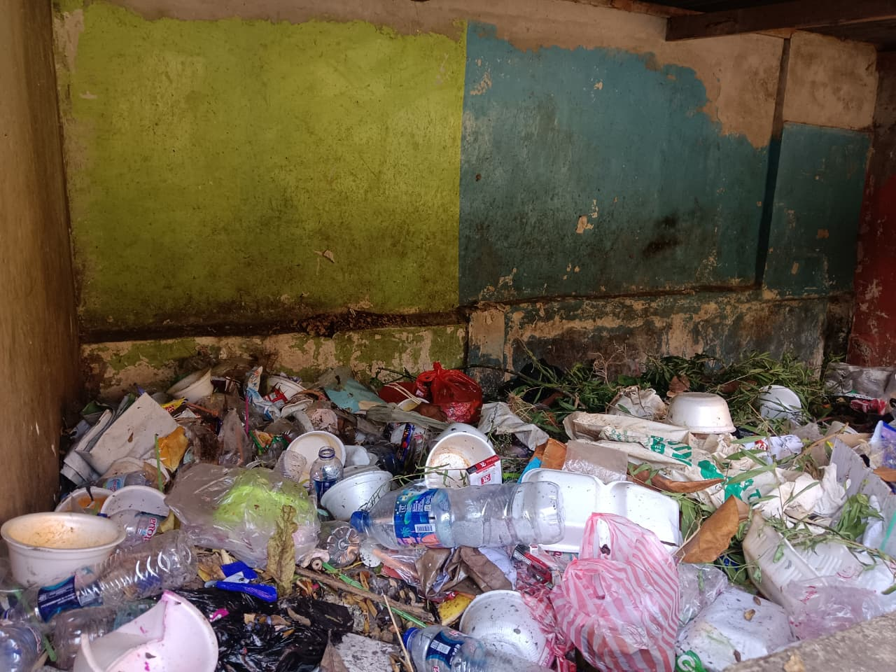

Tim Pengembang Website
Clara Permata Ariani
NIS. 12010
Khansa Fauziyyah Ramdhani
NIS. 12022
Putri Aulia Humairoh
NIS. 12032
Rizky Amalya
NIS. 12037
Masalah Pengelolaan Sampah

Permasalahan sampah di lingkungan Sekolah
Di lingkungan sekolah maupun masyarakat, kita sering menjumpai tumpukan botol plastik, bungkus jajanan, dan kantong kresek di sudut koridor atau selokan.
Pengelolaan sampah adalah upaya untuk mengurangi, memilah, mengumpulkan, mengolah, dan mendaur ulang sampah agar tidak mencemari lingkungan. Pengelolaan sampah yang baik dapat menciptakan lingkungan yang bersih, sehat, dan nyaman.
Mari Belajar Memilah Sampah
Klik salah satu kartu di bawah untuk mengetahui penanganan yang tepat!
Sampah Organik
Anorganik
Sampah B3
Judul
Penerapan Prinsip 3R
🔴 REDUCE (Mengurangi)
Mengurangi penggunaan barang sekali pakai yang berpotensi menjadi sampah. Contoh: Membawa botol minum (tumblr) sendiri ke sekolah dan menolak kantong plastik.
🟡 REUSE (Menggunakan Kembali)
Memanfaatkan kembali barang yang masih layak pakai tanpa perlu membuangnya. Contoh: Menggunakan kembali kaleng bekas menjadi pot tanaman atau tempat pensil kelas.
🟢 RECYCLE (Mendaur Ulang)
Mengolah kembali sampah menjadi produk baru yang bermanfaat. Contoh: Membuat pupuk kompos dari sisa makanan kantin atau menyetor botol plastik ke Bank Sampah sekolah.
Poster Edukasi Lingkungan
Simpan dan bagikan poster ini untuk mengajak teman-teman menjaga kebersihan!